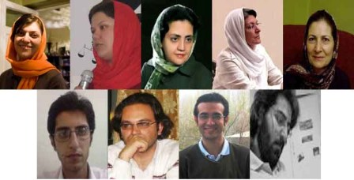

|
|
انتقال 12 نفر از فعالان کمپین یک میلیون امضا و مادران صلح به زندان اوین
پنج شنبه6 فروردین 1388

تغییر برای برابری - اطلاعات دریافتی از خانواده های 12 نفر از اعضای کمپین و مادران صلح که امروز بازداشت شده اند حاکی از آن است که قاضی متین راسخ، با تفهیم اتهام اخلال در نظم عمومی و تشویش اذهان برای این افراد قرار کفالت 50 میلیون تومانی صادر کرده و تمامی بازداشت شدگان پس از بازجویی در کلانتری نیلوفر به زندان اوین منتقل شده اند.
بازداشت شدگان که طی تماس تلفنی با خانواده های خود این موضوع را به اطلاع ایشان رسانده اند، گفته اند قرار کفالت تنها با فیش کارمندی پذیرفته خواهد شد، اما مدت کوتاهی پس از این تماس قاضی پرونده، شعبه یکم بازپرسی ویژه امنیت واقع در جنب زندان اوین را ترک کرده است.
خانواده های بازداشت شدگان که تا آخرین ساعات پنچ شنبه در مقابل کلانتری های گلوبندک، نیلوفر، بازداشتگاه وزرا و زندان اوین سرگردان بوده اند همچنین می گویند که فرصت چندانی برای پیدا کردن ضامن کارمند نداشته و با توجه به تعطیلی آخر هفته درعمل گونه پیگیری تا شنبه بی نتیجه خواهد بود.
خدیجه مقدم، دلارام علی، لیلا نظری، محبوبه کرمی، فرخنده احتسابیان، بهارا بهروان، علی عبدی، امیر رشیدی، محمد شوراب، آرش نصیری اقبالی از اعضای کمپین یک میلیون امضا و همچنین شهلا فروزانفر، ثریا یوسفی از مادران صلح ظهر روز پنچ شنبه ششم فروردین، پیش از آن که موفق به دیدار نوروزی باخانواده های برخی از زندانیان و خانواده دکتر زهرا بنی یعقوب شوند بازداشت شده اند.
در دیگر رسانه ها:
بازداشت چند فعال حقوق زنان در تهران/ بی بی سی
بازداشت شماری از اعضای کمپین یک میلیون امضا/رادیو فردا
بازداشت جمعی از اعضا کمپین یک میلیون امضا/رادیو زمانه
بازداشت خودسرانه فعالان حقوق زن و ممانعت از بازديد نوروزی آن ها، کمپين بين المللی حقوق بشر در ايران
بیش از ده نفر از اعضای کمپین یک میلیون امضا و مادران صلح بازداشت شدند/شبکه همبستگی زنان
بازداشت خودسرانه فعالان حقوق زن/ ایران امروز
انتقال فعالان دانشجویی و زنان کمپین یک میلیون امضا به زندان اوین/خبرنامه امیرکبیر
دیدار نوروزی هم ممنوع : بازداشت اعضای کمپین / مدرسه فمنیستی
دیدار نوروزی هم ممنوع : بازداشت اعضای کمپین / کانون زنان ایرانی
بازداشت اعضای کمپین یک میلیون امضا /کمیته گزارشگران حقوق بشر
بازداشت ده تن از فعالان حقوق زنان در تهران/ایران پرس نیوز
بازداشت های گسترده در تهران/ خبرگزاری جبهه ملی
بازداشت ده تن از اعضای کمپین یک میلیون امضا در دیداری نوروزی/ بامداد خبر